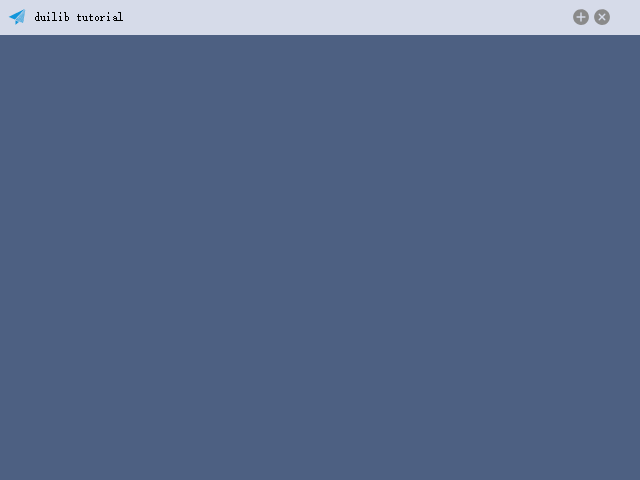
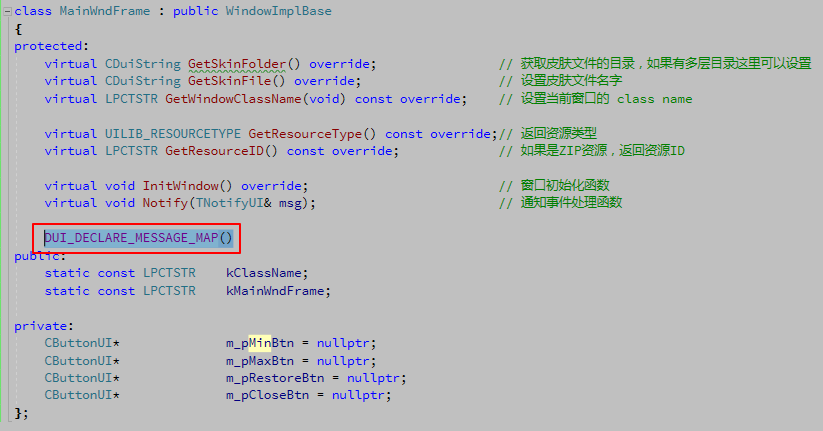
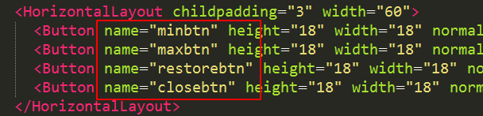
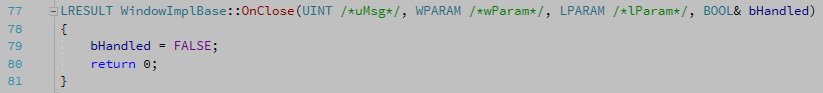

上一篇我们介绍了如何通过命名的 XML 控件转化为实际可操控的对象，实际上我们已经可以调用这些控件的一些方法来操作控件了，比如
void MainWndFrame::InitWindow()
{
m_pMinBtn = dynamic_cast<CButtonUI*>(m_PaintManager.FindControl(_T("btn_wnd_min")));
m_pMaxBtn = dynamic_cast<CButtonUI*>(m_PaintManager.FindControl(_T("btn_wnd_max")));
m_pRestoreBtn = dynamic_cast<CButtonUI*>(m_PaintManager.FindControl(_T("btn_wnd_restore")));
m_pCloseBtn = dynamic_cast<CButtonUI*>(m_PaintManager.FindControl(_T("btn_wnd_close")));
m_pMinBtn->SetVisible(false);
}
我们调用了 CButtonUI 的 SetVisible 方法，将最小化控件隐藏了。但实际这并没有什么作用，我们真正需要的是点击某个控件后执行某些操作。

基本的消息响应处理
接下来我们希望实现更实用的功能，点击最小化按钮把窗口最小化、点击关闭按钮把窗口关闭等。这就要涉及到对控件消息的处理，同样父类 WindowImplBase 提供了 Notify 虚函数，可以提供我们覆写并处理消息。一下代码实现了点击最小化按钮将窗口最小化的功能。
void MainWndFrame::Notify(TNotifyUI& msg)
{
if (msg.sType == DUI_MSGTYPE_CLICK)
{
CDuiString strName = msg.pSender->GetName();
if (strName == _T("btn_wnd_min"))
{
SendMessage(WM_SYSCOMMAND, SC_MINIMIZE, 0);
}
}
__super::Notify(msg);
}
首先我们在 Notify 函数中判断了一下消息的类型，如果是鼠标点击那么我们获取一下触发的控件名称，根据名称判断是不是 btn_wnd_min 然后执行指定操作。最后别忘记调用父类的 Notify 函数来继续其他消息的处理（其实父类什么都没做，）。
仿 MFC 形式消息响应
以上是一个基本的响应过程。另外还有一种类似 MFC 方式的响应方法，首先在 MainWndFrame.h 中添加一句 DUI_DECLARE_MESSAGE_MAP()

然后在 MainWndFrame.cpp 中添加如下代码
DUI_BEGIN_MESSAGE_MAP(MainWndFrame, CNotifyPump)
DUI_ON_MSGTYPE(DUI_MSGTYPE_CLICK, OnClick)
DUI_END_MESSAGE_MAP()
这样我们就将 DUI_MSGTYPE_CLICK 类型的消息映射到了 OnClick 函数中，而 OnClick 函数在父类 WindowImplBase 中已经提供了一个虚函数了。
void WindowImplBase::OnClick(TNotifyUI& msg)
{
CDuiString sCtrlName = msg.pSender->GetName();
if( sCtrlName == _T("closebtn") )
{
Close();
return;
}
else if( sCtrlName == _T("minbtn"))
{
SendMessage(WM_SYSCOMMAND, SC_MINIMIZE, 0);
return;
}
else if( sCtrlName == _T("maxbtn"))
{
SendMessage(WM_SYSCOMMAND, SC_MAXIMIZE, 0);
return;
}
else if( sCtrlName == _T("restorebtn"))
{
SendMessage(WM_SYSCOMMAND, SC_RESTORE, 0);
return;
}
return;
}
可以看出，DuiLib 已经默认帮我们实现了几个按钮的鼠标点击功能。我们只需要根据它设定的名字修改一下我们控件的 name 属性就可以实现几个功能了。当然如果我们要添加其他控件的处理，是需要覆写这个 OnClick 函数的。

修改完成后最小化、最大化、还原三个按钮都可以正常工作了，但是关闭按钮点击后并不能完全退出程序，而仅仅是把程序隐藏了，这主要原因是当我们点击关闭按钮时调用的是父类的 Close 函数，该函数发送了退出消息后，窗口接收到该消息的处理函数 OnClose 未做任何措施，如下所示：

要解决这个问题很简单，我们只需要覆写一下这个 OnClose 方法，然后执行退出操作就可以了。
LRESULT MainWndFrame::OnClose(UINT uMsg, WPARAM wParam, LPARAM lParam, BOOL& bHandled)
{
if (uMsg == WM_CLOSE)
{
PostQuitMessage(0L);
}
return __super::OnClose(uMsg, wParam, lParam, bHandled);
}
覆写完成后，我们三个功能按钮（哦不，是四个）就都可以正常使用了。另外我自己还发现了两个小问题，窗口的标题栏双击是无法最大化的，这个解决很简单，在 main 函数创建窗口的时候，将窗口的 UI_WNDSTYLE_DIALOG 属性修改为 UI_WNDSTYLE_FRAME 就可以了，至于两个参数什么意思，大家跟进去看一下就知道拉。
pMainWndFrame->Create(nullptr, MainWndFrame::kClassName, UI_WNDSTYLE_FRAME, 0);
另外一个问题是窗口是无法拖动放大缩小的，这个也很好解决，我们修改 XML，添加上窗口最小大小和可拖动范围就可以了。如下所示：
<?xml version="1.0" encoding="UTF-8"?>
<Window size="640,480" mininfo="640,480" caption="0,0,0,35" sizebox="4,4,4,4">
......
</Window>
mininfo 属性决定了窗口最小大小，sizebox 属性是指定当鼠标移动到窗口边缘多少像素的时候显示拖放手势。这里指定的是 4 像素，这样指定后窗口就可以拖动了，而且最小不允许小于默认的 640x480。
事件委托
除了以上两种方式外，我们还可以通过事件委托的方式来处理指定控件的消息。如下示例演示了事件委托的实现方式。
void MainWndFrame::InitWindow()
{
m_pMinBtn = dynamic_cast<CButtonUI*>(m_PaintManager.FindControl(_T("minbtn")));
m_pMaxBtn = dynamic_cast<CButtonUI*>(m_PaintManager.FindControl(_T("maxbtn")));
m_pRestoreBtn = dynamic_cast<CButtonUI*>(m_PaintManager.FindControl(_T("restorebtn")));
m_pCloseBtn = dynamic_cast<CButtonUI*>(m_PaintManager.FindControl(_T("closebtn")));
m_pMinBtn->OnNotify += MakeDelegate(this, &MainWndFrame::OnBtnTest);
}
在 InitWindow 函数中，我们给最小化按钮委托了一个 OnBtnTest 的处理函数，当我们对最小化按钮做某些操作时，就会到达 OnBtnTest 处理函数中。OnBtnTest 的实现如下：
bool MainWndFrame::OnBtnTest(void* param)
{
TNotifyUI* msg = reinterpret_cast<TNotifyUI*>(param);
if (msg->sType == DUI_MSGTYPE_CLICK)
{
// ... do something
}
return true;
}
这种方式同样可以实现处理控件的消息功能，如果对委托的函数指针加以改造，还可以使用 C++11 的 lambda 表达式来实现具体的处理函数功能。
消息捕获（拦截）原生消息
DuiLib 提供了虚函数 HandleMessage，可以提供我们覆写来捕获或者拦截原声的系统消息。比如我们希望监听剪切板的消息时，就可以像一下方法一样来实现。
LRESULT MainWndFrame::HandleMessage(UINT uMsg, WPARAM wParam, LPARAM lParam)
{
if (uMsg == WM_CHANGECBCHAIN)
{
// do something...
}
else if (uMsg == WM_DRAWCLIPBOARD)
{
// do something...
}
return __super::HandleMessage(uMsg, wParam, lParam);
}
老版本的 DuiLib 中窗口创建完成后，按下 ESC 窗口会被关闭，如果想屏蔽掉 ESC 按下的消息，就可以通过这个函数来实现。